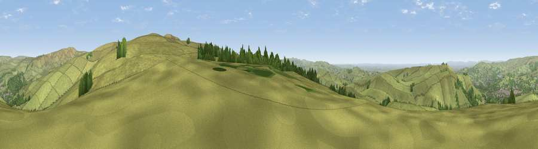

Viewpoint near Little Hayfield
#9572 in England · top 13% of its area beats it · near Little HayfieldThe view, rendered

A 360° render of this exact spot computed from the terrain model, tree cover and land cover — summer colours, afternoon light, calibrated against photographs of famous viewpoints. Real trees, hedges and buildings will differ in detail.
The panorama
Grey silhouette: terrain skyline in each direction (720 bearings, Earth curvature and refraction included). Dashed green: skyline with trees (+15 m) and buildings (+8 m) as obstacles. Blue strip: how far the ground is visible on each bearing.
Where the view opens
Wedge length = distance to the farthest visible ground on that bearing (vegetation-aware). Rings at 10, 25 and 50 km.
What fills the view
87% grassland · 10% woodland · 3% built-up
Angular shares of the visible panorama (visual magnitude), not map area. Landscape diversity 0.20 (0–1 Shannon).
Key numbers
More beautiful places nearby
The staircase of upgrades: each row has a higher view potential than everything closer. Driving times are estimates from straight-line distance, calibrated against real road routing — check an actual route before setting out.
| Place | Direction | Drive | Score |
|---|---|---|---|
| The Knott | S · 2 km | ~4 min | 67.8 |
| Viewpoint near Little Hayfield | ESE · 3 km | ~7 min | 70.0 |
| Viewpoint near Upper Booth | SE · 5 km | ~11 min | 72.6 |
| Harrop Edge | NW · 8 km | ~16 min | 74.6 |
| Wild Bank | NW · 9 km | ~18 min | 76.2 |
| Viewpoint near Carrbrook | NNW · 11 km | ~20 min | 77.1 |
| Viewpoint near Edenfield | NW · 36 km | ~54 min | 77.5 |
| Viewpoint near Mow Cop | SSW · 38 km | ~57 min | 78.9 |
53.41444, -1.93564 · source: screening · position refined by local search. Computed location — check access rights before visiting.